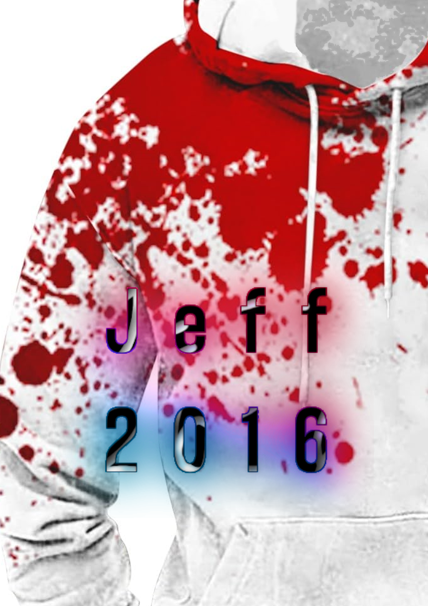

A tragic reinterpretation of an iconic internet legend, exploring emotional collapse, isolation, digital paranoia and distorted identity inside the MIRRORGATE universe.
JEFF 2016 reimagines classic creepypasta culture through a more grounded, human and psychologically disturbing perspective.
Instead of focusing only on violence, the project explores emotional deterioration, social isolation and internet-induced paranoia.
“Some people disappear slowly before anyone notices.”